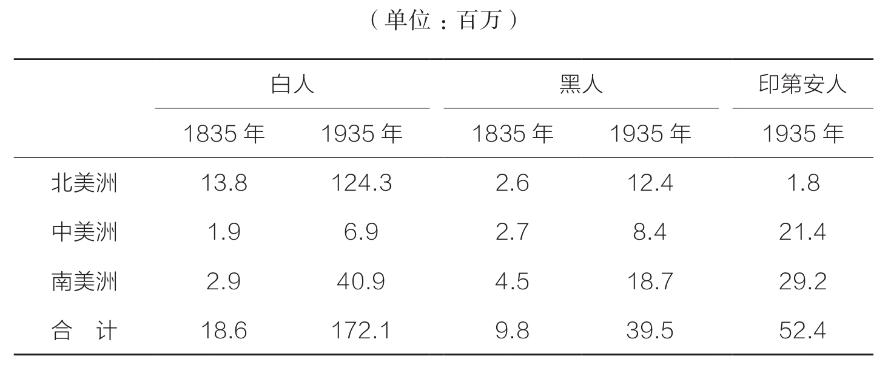
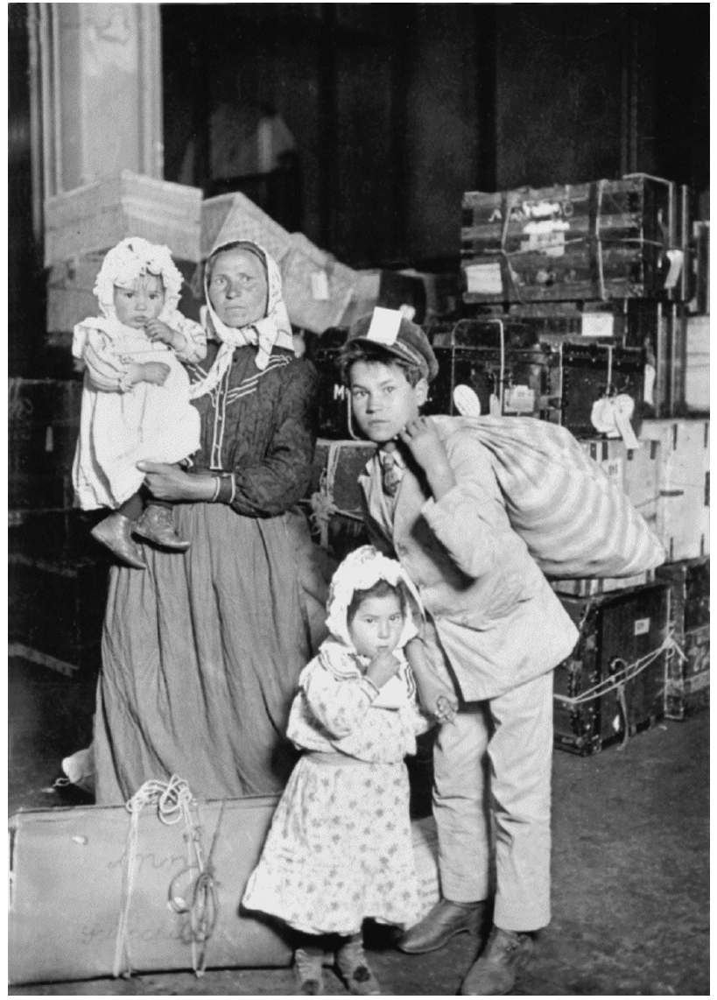
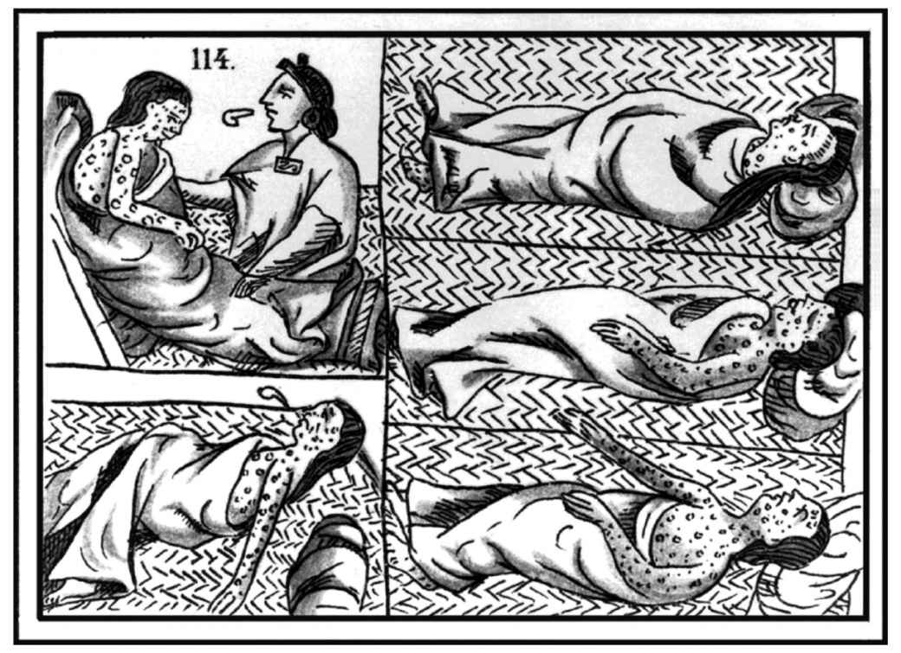

欧洲能提供如此多的移民，千百万人之所以愿意离开他们祖先的家园，到遥远的大陆去冒各种尚不知晓的危险，原因在第二十六章第七节已作了说明。1763年的狭长带状欧洲拓居地，到1914年时已扩大到覆盖整块整块的大陆，其中包括澳大利亚和新西兰；而这两个地方早些时候还未被触及。
欧洲移民绝大多数去了美洲。这是自然的，因为欧洲最早的殖民地就建在美洲，而且那些大陆还提供了丰富得多的自然资源和经济机会。不过，自欧洲最早的殖民地出现在中美洲和南美洲以后，令人吃惊的是，更多的移民选择定居北美洲。
西班牙和葡萄牙殖民地与英国殖民地截然不同的特点解释了北美洲具有更多移民人口的原因。西班牙人和葡萄牙人殖民于印第安人人口较稠密的地区。尽管对欧洲人入侵之前的美洲印第安人人数的各种估计大相径庭，但却一致认为印第安人集中于后来所称的拉丁美洲。这些土著民族提供了所需的全部劳动，欧洲移居者就无需承担此类任务。因此，西班牙和葡萄牙美洲殖民地的移民大多是士兵、牧师、政府官员和少数必需的工匠。
表33.1 美洲大陆的种族分布


图233 1900年前后，纽约伊利斯岛上的意大利移民。这些来自意大利南部的新来者因刚刚来到一个新地方，脸上显出了焦虑和希望。到1900年时，意大利向西半球的移民比欧洲其他任何国家的都多。
相形之下，格兰德河以北的印第安人比较稀少，不能提供劳力资源。因此，大西洋沿岸的英国人和圣劳伦斯河两岸的法国人，无论是砍伐森林、耕作已开垦的土地，还是在沿海水域捕鱼，都得自己去干。在这种情况下，北美洲需要所能得到的所有移居者，为此，英属北美殖民地向所有种族、各种语言、不同信仰的移民开放。到1835年时，中美洲和南美洲仅有480万欧洲移居者，而北美洲却有1380万。
19世纪后半叶，欧洲移民不断增加，1900年至1910年间达到顶峰；在这10年中，每年几乎有100万人迁移。这一前所未有的人流涌进了每一块大陆，结果，尽管北美仍是接受移民的主要地区，但这时的澳大利亚、南非和南美也为相当多的欧洲人所拓居。
数百万人移居美洲导致的结果是数百万美洲印第安土著居民被取代。这种取代的范围之广直到今天才被人们认识到；今天，人口学家和历史学家发现，人们长期以来的假设即美洲大陆大部分地区无人居住，有利于其他大陆的殖民是何等荒谬。最新研究表明，1500年前后，新、旧大陆的人口密度大体差不多[1]：中国约有1亿人，地中海地区6000万到7000万人，美洲大约8000万人（在黑死病和其他欧亚大陆流行病未流行前）。当哥伦布到达美洲时，这里绝不是无人居住；1492年，在现在美国所在的地区生活的美洲印第安人估计有500万人，而到1809年时已下降到60万。
有些人的死亡是因为暴力和过度劳动，但主要的原因是移民们无意中将欧亚大陆的疾病和非洲的疾病一起带入美洲大陆。科学家已收集了这些疾病的名单，它们对于脆弱的美洲印第安人来说是致命的，就像14世纪的黑死病对于欧洲人那样。这份名单列出了一连串令人恐惧的疾病，它们应对人类历史上最具毁灭性的灾难负主要责任，尽管不是负全部责任。这份名单包括天花、麻疹、白喉、沙眼、百日咳、水痘、黑死病、疟疾、伤寒症、霍乱、黄热病、登革热、猩红热、阿米巴痢疾、流感和各种肺结核。
也许有人会问，为什么原先也是从欧亚大陆移民来的美洲印第安人在到达美洲之后对那些疾病却没有免疫力呢？已有的解释是，在远古时代，早期的移民仍处于食物采集阶段，当时，那些疾病尚未出现。而且，他们是从西伯利亚来的，那里人口稀少、天气寒冷，不利于那些流行病的传播。因此，移民们到来时没有固有的免疫力，从而在他们到达空旷无人的美洲大陆之后也就无法获得免疫力——因此，当欧洲人到达美洲时，面对欧洲人从欧洲本土带来的疾病和他们的非洲奴隶从非洲带来的疾病，印第安人遭到了种族灭绝似的攻击。
就移民的具体来源来说，拉丁美洲各国的移民如人们原来所预想的那样，主要来自伊比利亚半岛，不过，19世纪后期也有大批移民来自意大利和德国。1890年以前，北美洲的绝大多数移民来自西北欧；而1890年以后，只有近三分之一的移民来自西北欧，其余三分之二的移民则来自东欧和南欧。至于英国自治领，移民的来源却受到限制，他们主要来自不列颠群岛。不过在第一次世界大战以后，尤其是第二次世界大战以后，为了让更多的人进入这些辽阔的地区，自治领放宽了移民政策。
这些迁移的最终结果是美洲和英国自治领种族上的欧化。这些地区的人口已变得以欧洲人为主，不过，也有某些重要的例外，例如：在中美洲，土著印第安人仍占优势（为总人口的58%）；在南美洲，印第安人的比例也很大（占33%）。因奴隶贸易而被运入美洲的大批黑人是种族欧化的另一个例外。如前所述，据估计有1200万到2000万奴隶在横穿大西洋的航行中幸存下来，到达美洲大陆。如今，他们的后代在北美洲约占总人口的10%，在中美洲占30%，在南美洲占21%。南非是种族欧化的第三个例外：在这里，土著非洲人以大于3：1的比例在数量上超过了白人（不论是布尔人还是英国血统的人）。

图234 美洲土著对天花这种欧洲疾病缺乏生物抵抗力，从而引发了巨大的灾难。这幅阿兹特克人的画描绘的是1520年在特诺奇蒂特兰的天花流行中感染天花的阿兹特克人。历史学家估计，墨西哥中部的居民患病死去的人一年中高达40%。这场大灾难削弱了阿兹特克人抵抗西班牙人入侵他们领土的能力。
最后，19世纪发展起来的欧洲热带医学学派降低了欧洲人在热带地区的死亡率，促进了海外的种族欧化。这些学派的工作是基于罗伯特·科赫、路易·巴斯德和其他微生物学家的研究之上的，同时也基于对热带地区军人健康负责的军医的观察。经过反复试错，他们发现了为部队提供洁净水、符合卫生地丢弃污物，以及使用蚊帐防止热带昆虫的重要性。美国人在古巴和巴拿马首先使用了这些方法，成功地控制了疟疾和黄热病的泛滥。